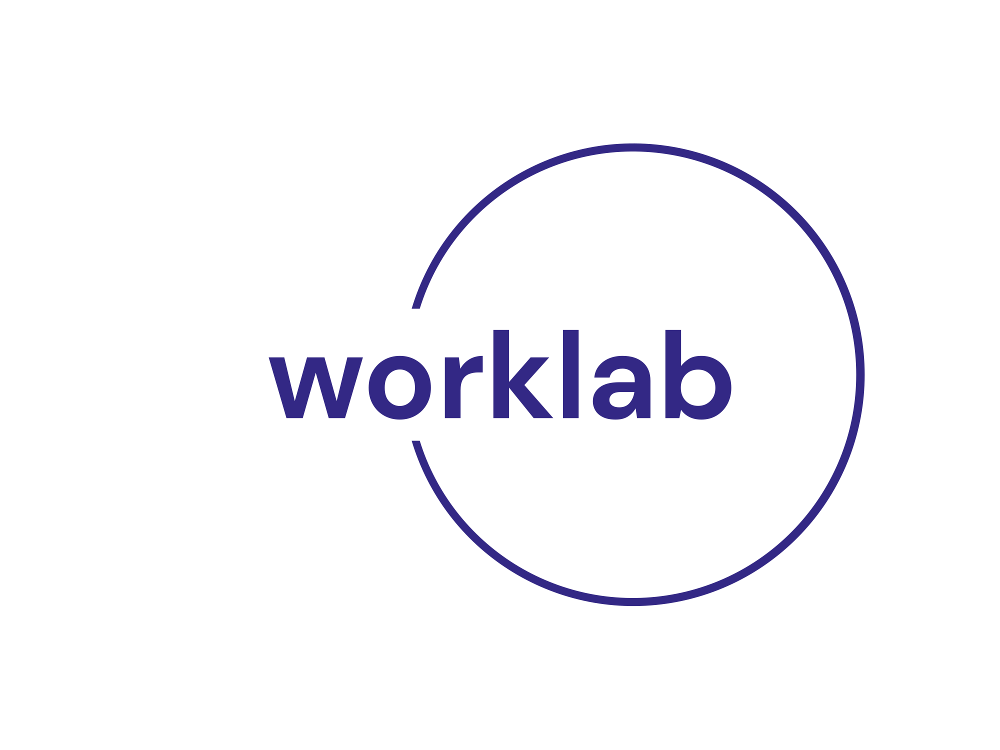

<div class="father w-full h-[10vh] bg-[#01192f] flex sticky top-0 right-0 left-0 z-[99] text-white items-center justify-around ">
    <div class="logo hover:cursor-pointer lg:block sm:hidden " routerLink="/">
        <!--  -->
        <div class=" font-semibold text-3xl text-[#be8a28] ">
            <\ WorkLab>
        </div>
    </div>

    <ul class=" flex justify-center items-center gap-8 sm:gap-1 sm:text-xs lg:text-lg ">
        <li *ngIf="!isConnected"
            class=" hover:bg-green-600 px-4 py-1 hover:rounded-[25px] flex justify-center items-center hover:cursor-pointer "
            routerLink="/login">
            login
        </li>
        <li *ngIf="!isConnected"
            class=" hover:bg-green-600 px-4 py-1 hover:rounded-[25px] flex justify-center items-center hover:cursor-pointer "
            routerLink="/register">
            register
        </li>
        <li *ngIf="isConnected"
            class=" hover:bg-green-600 px-4 py-1 hover:rounded-[25px] flex justify-center items-center hover:cursor-pointer "
            routerLink="/home">
            home
        </li>
        <li (click)="joinWorklab()" *ngIf="isConnected"
            class=" hover:bg-green-600 px-4 py-1 hover:rounded-[25px] flex justify-center items-center hover:cursor-pointer ">
            join Worklab
        </li>
        <li *ngIf="isConnected"
            class=" hover:bg-green-600 px-4 py-1 hover:rounded-[25px] flex justify-center items-center hover:cursor-pointer "
            (click)="hide()">
            make Worklab
        </li>

        <li class=" hover:bg-green-600 px-4 py-1 hover:rounded-[25px] flex justify-center items-center hover:cursor-pointer "
            routerLink="/problems">
            Problems
        </li>

        <li *ngIf="isConnected" (click)="logOut()"
            class=" hover:bg-green-600 px-4 py-1 hover:rounded-[25px] flex justify-center items-center hover:cursor-pointer "
            routerLink="/">
            LogOut
        </li>

    </ul>

    <div class="profile flex lg:gap-4 sm:gap-1 cursor-pointer sm:px-2 lg:px-4 items-center lg:py-1 rounded-[25px] bg-[#07345f] " routerLink="/editProfile"
        *ngIf="isConnected">

        <div class="sm:text-xs lg:text-lg  ">
            {{user?.name}}
        </div>
        <div class="text-white " *ngIf="isConnected">

            <fa-icon [icon]="icon" class="text-[#fff]  lg:text-[15px] sm:text-xs "></fa-icon>
        </div>

    </div>


</div>
<app-create-worklab *ngIf="show"></app-create-worklab>
<app-join-worklab *ngIf="showJoinWorklab"></app-join-worklab>